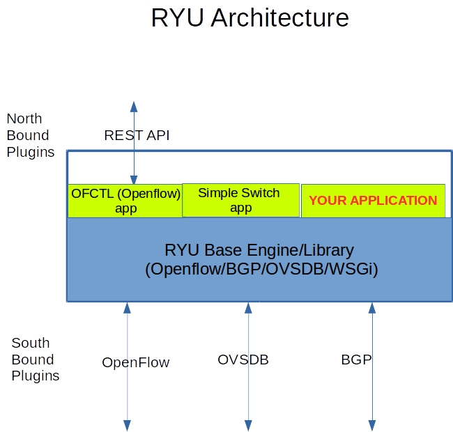

Version: 1.0.1
KNET Solutions (Online Training Centre),
Phone/WhatsApp: +919445042007
we provide Academic SDN Project assistance/guidance.
RYU Controller1. Introduction2. How to run RYU applications.3. RYU Controller command line options4. Reactive/Proactive Flows5. OpenFlow Applications6. Basic Openvswitch Commands7. Switching applicationsA. Simple Proactive Hub ApplicationB. Simple Switch Application (in built)C. Simple Switch with L3 Match ApplicationD. Simple Switch with L4 Match ApplicationE. Simple Switch with flow expiry (flow timeouts configured)8. Controller Connection Failure Demo
Ryu is a component-based software defined networking framework. Ryu provides software components with well defined API that make it easy for developers to create new network management and control applications. Ryu supports various protocols for managing network devices, such as OpenFlow, OVSDB, BGP. About OpenFlow, Ryu supports fully 1.0, 1.2, 1.3, 1.4, 1.5 and Nicira Extensions. All of the code is freely available under the Apache 2.0 license.

run the ryu application:
ryu-manager ryu.app.
In built applications are available in
https://github.com/osrg/ryu/tree/master/ryu/app
Some of the applications are ,
ryu-manager ryu.app.simple_switch_13
Example:
xxxxxxxxxxsuresh@suresh-vm:~$ ryu-manager ryu.app.simple_switch_13loading app ryu.app.simple_switch_13loading app ryu.controller.ofp_handlerinstantiating app ryu.app.simple_switch_13 of SimpleSwitch13instantiating app ryu.controller.ofp_handler of OFPHandler
Check the Openflow port status
RYU Manager listens on openflow ports(6653) are in listening state.
netstat -ap | grep 6653
xxxxxxxxxxsuresh@suresh-vm:~$ netstat -ap | grep 6653(Not all processes could be identified, non-owned process infowill not be shown, you would have to be root to see it all.)tcp 0 0 0.0.0.0:6653 0.0.0.0:* LISTEN 19190/pythonsuresh@suresh-vm:~$
How to stop the ryu controller
xxxxxxxxxxCTRL + C (Kill the Process)
How to run your (custom developed) applications.
RYU application is a python script.
xxxxxxxxxxryu-manager <python-file-name>
Example:
ryu-manager l3_switch.py
How to run your multiple applications.
RYU can run multiple applications in a single initiation.
xxxxxxxxxxryu-manager <application1> <application2>
Example:
ryu-manager ryu.app.simple_switch_13 ryu.app.ofctl_rest
To know all the available options
ryu-manager --help
To enable the debug logs:
ryu-manager --verbose
To use custom openflow port number
ryu-manager --ofp-tcp-listen-port 6634
Example:
xxxxxxxxxxryu:ryu-manager --ofp-tcp-listen-port 6634 ryu.app.simple_switch_13Mininet:sudo mn --controller=remote,ip=127.0.0.1:6634 --switch=ovsk,protocols=OpenFlow13 --topo=linear,4
To use topology discovery
ryu-manager --observe-links
Reactive Flows:
When the new packet enters in the switch, if it doesnot match on the existing flows, Switch sends it to the controller.
controller inspect the packet, and build the logic
install the flow for that session(match) in the switch
Packet IN /Packet Out
Proactive Flows:
Applications are Part of SDN Controller
Application sits externally, and communicate with SDN Controller thru North bound plugin
xxxxxxxxxxovs-vsctl showovs-ofctl -O OpenFlow13 dump-flows <bridgename>ovs-ofctl -O OpenFlow13 show <bridgename>
Install the Openflow flow in the switch which performs FLOOD action, when switch connects to the controller.
Testing
sudo mn --controller=remote,ip=127.0.0.1 --mac --switch=ovsk,protocols=OpenFlow13 --topo=single,4
xxxxxxxxxxsuresh@suresh-vm:~/sdn$ sudo mn --controller=remote,ip=127.0.0.1 --mac --switch=ovsk,protocols=OpenFlow13 --topo=single,4[sudo] password for suresh:*** Creating network*** Adding controllerUnable to contact the remote controller at 127.0.0.1:6653Unable to contact the remote controller at 127.0.0.1:6633Setting remote controller to 127.0.0.1:6653*** Adding hosts:h1 h2 h3 h4*** Adding switches:s1*** Adding links:(h1, s1) (h2, s1) (h3, s1) (h4, s1)*** Configuring hostsh1 h2 h3 h4*** Starting controllerc0*** Starting 1 switchess1 ...*** Starting CLI:mininet>
ryu-manager hub.py
xxxxxxxxxxsuresh@suresh-vm:~/sdn$ ryu-manager hub.pyloading app hub.pyloading app ryu.controller.ofp_handlerinstantiating app ryu.controller.ofp_handler of OFPHandlerinstantiating app hub.py of SimpleSwitch13
sudo ovs-ofctl -O OpenFlow13 dump-flows s1
xxxxxxxxxxsuresh@suresh-vm:~/sdn$ sudo ovs-ofctl -O OpenFlow13 dump-flows s1[sudo] password for suresh:cookie=0x0, duration=16.055s, table=0, n_packets=5, n_bytes=350, priority=0 actions=FLOODsuresh@suresh-vm:~/sdn$
xxxxxxxxxxmininet> pingall*** Ping: testing ping reachabilityh1 -> h2 h3 h4h2 -> h1 h3 h4h3 -> h1 h2 h4h4 -> h1 h2 h3*** Results: 0% dropped (12/12 received)mininet>
xxxxxxxxxxsuresh@suresh-vm:~/sdn$ sudo ovs-ofctl -O OpenFlow13 dump-flows s1cookie=0x0, duration=654.092s, table=0, n_packets=72, n_bytes=5040, priority=0 actions=FLOODsuresh@suresh-vm:~/sdn$
Simple Switch Application is RYU inbuit basic switching application works in reactive model.
Testing
sudo mn --controller=remote,ip=127.0.0.1 --mac --switch=ovsk,protocols=OpenFlow13 --topo=single,4
xxxxxxxxxxsuresh@suresh-vm:~/sdn$ sudo mn --controller=remote,ip=127.0.0.1 --mac --switch=ovsk,protocols=OpenFlow13 --topo=single,4[sudo] password for suresh:*** Creating network*** Adding controllerUnable to contact the remote controller at 127.0.0.1:6653Unable to contact the remote controller at 127.0.0.1:6633Setting remote controller to 127.0.0.1:6653*** Adding hosts:h1 h2 h3 h4*** Adding switches:s1*** Adding links:(h1, s1) (h2, s1) (h3, s1) (h4, s1)*** Configuring hostsh1 h2 h3 h4*** Starting controllerc0*** Starting 1 switchess1 ...*** Starting CLI:mininet>
ryu-manager ryu.app.simple_switch_13
xxxxxxxxxxsuresh@suresh-vm:~/sdn$ ryu-manager ryu.app.simple_switch_13loading app ryu.app.simple_switch_13loading app ryu.controller.ofp_handlerinstantiating app ryu.app.simple_switch_13 of SimpleSwitch13instantiating app ryu.controller.ofp_handler of OFPHandlerpacket in 1 00:00:00:00:00:03 33:33:00:00:00:02 3packet in 1 00:00:00:00:00:04 33:33:00:00:00:02 4packet in 1 00:00:00:00:00:01 33:33:00:00:00:02 1packet in 1 00:00:00:00:00:02 33:33:00:00:00:02 2
Table Miss entry to be present
xxxxxxxxxxsuresh@suresh-vm:~/sdn$ sudo ovs-ofctl -O OpenFlow13 dump-flows s1cookie=0x0, duration=39.737s, table=0, n_packets=8, n_bytes=560, priority=0 actions=CONTROLLER:65535suresh@suresh-vm:~/sdn$
xxxxxxxxxxmininet> h1 ping h2PING 10.0.0.2 (10.0.0.2) 56(84) bytes of data.64 bytes from 10.0.0.2: icmp_seq=1 ttl=64 time=18.5 ms64 bytes from 10.0.0.2: icmp_seq=2 ttl=64 time=0.672 ms64 bytes from 10.0.0.2: icmp_seq=3 ttl=64 time=0.119 ms64 bytes from 10.0.0.2: icmp_seq=4 ttl=64 time=0.148 ms^C--- 10.0.0.2 ping statistics ---4 packets transmitted, 4 received, 0% packet loss, time 3027msrtt min/avg/max/mdev = 0.119/4.869/18.540/7.896 msmininet>
suresh@suresh-vm:~/sdn$ sudo ovs-ofctl -O OpenFlow13 dump-flows s1 cookie=0x0, duration=35.152s, table=0, n_packets=5, n_bytes=434, priority=1,in_port="s1-eth2",dl_src=00:00:00:00:00:02,dl_dst=00:00:00:00:00:01 actions=output:"s1-eth1" cookie=0x0, duration=35.140s, table=0, n_packets=4, n_bytes=336, priority=1,in_port="s1-eth1",dl_src=00:00:00:00:00:01,dl_dst=00:00:00:00:00:02 actions=output:"s1-eth2" cookie=0x0, duration=139.207s, table=0, n_packets=19, n_bytes=1302, priority=0 actions=CONTROLLER:65535 suresh@suresh-vm:~/sdn$
Priority:
priority=1
Match:
in_port="s1-eth2",dl_src=00:00:00:00:00:02,dl_dst=00:00:00:00:00:01
Action:
output:"s1-eth1"
This exercise is same as Simple Switch Application, except Match is based on IP address.
sudo mn --controller=remote,ip=127.0.0.1 --mac --switch=ovsk,protocols=OpenFlow13 --topo=single,4
ryu-manager l3_switch.py
suresh@suresh-vm:~/sdn$ sudo ovs-ofctl -O OpenFlow13 dump-flows s1 cookie=0x0, duration=10.369s, table=0, n_packets=1, n_bytes=98, priority=1,ip,nw_src=10.0.0.1,nw_dst=10.0.0.2 actions=output:"s1-eth2" cookie=0x0, duration=10.361s, table=0, n_packets=1, n_bytes=98, priority=1,ip,nw_src=10.0.0.2,nw_dst=10.0.0.1 actions=output:"s1-eth1" cookie=0x0, duration=17.720s, table=0, n_packets=10, n_bytes=644, priority=0 actions=CONTROLLER:65535 suresh@suresh-vm:~/sdn$
Priority:
priority=1
Match:
ip,nw_src=10.0.0.1,nw_dst=10.0.0.2
Action:
output:"s1-eth2"
This exercise is same as Simple Switch Application, except Match is based on IP address,IP Protocol, src and dst Port
sudo mn --controller=remote,ip=127.0.0.1 --mac --switch=ovsk,protocols=OpenFlow13 --topo=single,4
ryu-manager l4_switch.py
mininet> h2 iperf -s &
mininet> h1 iperf -c h2 ------------------------------------------------------------ Client connecting to 10.0.0.2, TCP port 5001 TCP window size: 85.3 KByte (default) ------------------------------------------------------------ [ 3] local 10.0.0.1 port 59010 connected with 10.0.0.2 port 5001 [ ID] Interval Transfer Bandwidth [ 3] 0.0-10.0 sec 32.8 GBytes 28.1 Gbits/sec mininet>
suresh@suresh-vm:~/sdn$ sudo ovs-ofctl -O OpenFlow13 dump-flows s1 cookie=0x0, duration=131.163s, table=0, n_packets=1, n_bytes=98, priority=1,icmp,nw_src=10.0.0.1,nw_dst=10.0.0.2 actions=output:"s1-eth2" cookie=0x0, duration=131.154s, table=0, n_packets=1, n_bytes=98, priority=1,icmp,nw_src=10.0.0.2,nw_dst=10.0.0.1 actions=output:"s1-eth1" cookie=0x0, duration=85.890s, table=0, n_packets=773576, n_bytes=35217018256, priority=1,tcp,nw_src=10.0.0.1,nw_dst=10.0.0.2,tp_src=59010,tp_dst=5001 actions=output:"s1-eth2" cookie=0x0, duration=85.875s, table=0, n_packets=668305, n_bytes=44108130, priority=1,tcp,nw_src=10.0.0.2,nw_dst=10.0.0.1,tp_src=5001,tp_dst=59010 actions=output:"s1-eth1" cookie=0x0, duration=137.765s, table=0, n_packets=30, n_bytes=1996, priority=0 actions=CONTROLLER:65535 suresh@suresh-vm:~/sdn$
Priority:
priority=1
Match:
tcp,nw_src=10.0.0.1,nw_dst=10.0.0.2,tp_src=59010,tp_dst=5001
Action:
output:"s1-eth2"
This exercise is same as Simple Switch Application with idle_timeout and hard_timeout. So the flow will be removed/expired after certain time.
sudo mn --controller=remote,ip=127.0.0.1 --mac --switch=ovsk,protocols=OpenFlow13 --topo=single,4
ryu-manager flow_timeout.py
mininet> pingall
suresh@suresh-vm:~/Desktop/sdn/ryu_apps$ sudo ovs-ofctl -O OpenFlow13 dump-flows s1 cookie=0x0, duration=1.681s, table=0, n_packets=1, n_bytes=98, idle_timeout=10, hard_timeout=30, priority=1,in_port="s1-eth1",dl_src=00:00:00:00:00:01,dl_dst=00:00:00:00:00:02 actions=output:"s1-eth2" cookie=0x0, duration=1.670s, table=0, n_packets=1, n_bytes=98, idle_timeout=10, hard_timeout=30, priority=1,in_port="s1-eth2",dl_src=00:00:00:00:00:02,dl_dst=00:00:00:00:00:01 actions=output:"s1-eth1" cookie=0x0, duration=1.660s, table=0, n_packets=1, n_bytes=98, idle_timeout=10, hard_timeout=30, priority=1,in_port="s1-eth1",dl_src=00:00:00:00:00:01,dl_dst=00:00:00:00:00:03 actions=output:"s1-eth3" cookie=0x0, duration=1.655s, table=0, n_packets=1, n_bytes=98, idle_timeout=10, hard_timeout=30, priority=1,in_port="s1-eth3",dl_src=00:00:00:00:00:03,dl_dst=00:00:00:00:00:01 actions=output:"s1-eth1" cookie=0x0, duration=1.646s, table=0, n_packets=1, n_bytes=98, idle_timeout=10, hard_timeout=30, priority=1,in_port="s1-eth1",dl_src=00:00:00:00:00:01,dl_dst=00:00:00:00:00:04 actions=output:"s1-eth4"
suresh@suresh-vm:~/Desktop/sdn/ryu_apps$ sudo ovs-ofctl -O OpenFlow13 dump-flows s1 cookie=0x0, duration=116.277s, table=0, n_packets=47, n_bytes=3794, priority=0 actions=CONTROLLER:65535
Openvswitch support two mode of operation upon Controller connection fails A. Standalone Mode B. Secure Mode
A. Standalone mode:
B. Secure Mode:
How to configure:
you can check the current configuration, using
ovs-vsctl show
To configure:
ovs-vsctl set-fail-mode
standalone ovs-vsctl set-fail-mode secure
Example:
xxxxxxxxxxsudo ovs-vsctl set-fail-mode s1 standalone
sudo mn --controller=remote,ip=127.0.0.1 --mac --switch=ovsk,protocols=OpenFlow13 --topo=single,4
xxxxxxxxxxryu-manager flow_timeout.py
xxxxxxxxxxsudo ovs-vsctl show
xxxxxxxxxxmininet> h1 ping h2
xxxxxxxxxxsudo ovs-vsctl set-fail-mode s1 standalone